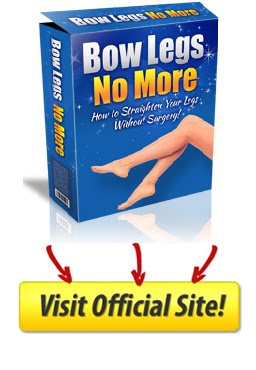

10 minute workout - Fat Shrinking Signal Program Review - 10 Minute Fat Loss
Already Decided?
That's great! Click the button on your right and take the action now.
What is 10-Minute Fat Loss ?
10-Minute Fat Loss System is an amazing new product that promises excellent results in just 10 minutes of intense work out in a day. Yes, 10 minutes looks laughably less for a workout, but it’s 10 minutes of intense workout. If you think the exercise is easy, then you should be prepared to sweat because you need the determination to get the results.
This Hidden Hormonal Defect Makes Weight Loss Impossible And Is the REAL Reason You’re Frustrated & Struggling. Continued Below…
The 10-Minute Fat Loss System was created by Derek Wahler, as a fat melting workout that you can do once a day for 3 weeks. The exercise equates to fueling your body metabolism 3 times a day to make it perform to its best. The program might not be great for someone aiming to build bulky muscles or even for people who love working out for many hours. The program suits people who want to get slim by working out for fewer minutes, precisely 10 minutes.
About Author :
Derek Wahler is a certified turbulence trainer and a renowned personal trainer. He says that before he became a personal trainer, he had struggled with the IT professional career which he was in. He says that he was on a tight schedule at work even on weekends but still tried to have a healthy lifestyle.
Therefore, the fat loss specialist understands the frustration that most people on a busy schedule, go through. He says that you need to push for results if you’re to succeed.

Pros:
It’s very budget-friendly! No kidding! All those products will only cost you $19.95! Some products will cost a hundred bucks for just one book, this one is packed!
10 Minute Fat Loss are backed by science. There are really studies showing that short, intensive workouts are better than long, tiring ones.
There is an actual name of author—not just an anonymous team of so-called experts. If something goes awry, you’ll be able to pinpoint the one at fault.
The instructions will be written and images will be shown, so you won’t worry about not doing the workouts properly.
Cons:
The 10 Minute Fat Loss says 10 minutes, in reality; the workouts are composed of a series of 10-minute exercises.
It lacks diversity. This type of product should at least have one video presentation for all the workouts, but no. It does not even have on downloadable video.
There is no member’s area where people can discuss what they have been doing. Pretty much, when you purchase it, you’re all alone.
What Are You Waiting For?
Your Purchase is Backed Up by 30 Days Money Back Guarantee. If You Don't Like The Product, Give It Back And You Will Be Refunded With No Questions Asked!
Guarantees And Support
Despite the low price with 10 Minute Fat Loss, you will still be protected by the money-back guarantee system. You have 2 months or more specifically, 60 days to try the product.
Anytime you think that it’s not working for you as it should, send them a message so you can have your money back. For inquiries, you can contact them at the support page.
Recent Post
Bow Legs No More - Looking for a Permanent Remedy for Bow Legs Without the Need for Surgery?
 Beauty/Purely Primal Skincare Guide Review - Does It Really Work ?
 Beauty/
Beauty/
Ageless Body System - HOW TO BE INSTANTLY AGELESS?
 Addiction/
Addiction/
QUIT SMOKING MAGIC REVIEW
Addiction/ALCOHOL FREE FOREVER - HOW TO QUIT DRINKING TODAY FROM THE PRIVACY OF YOUR HOME